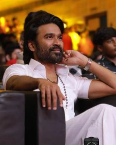
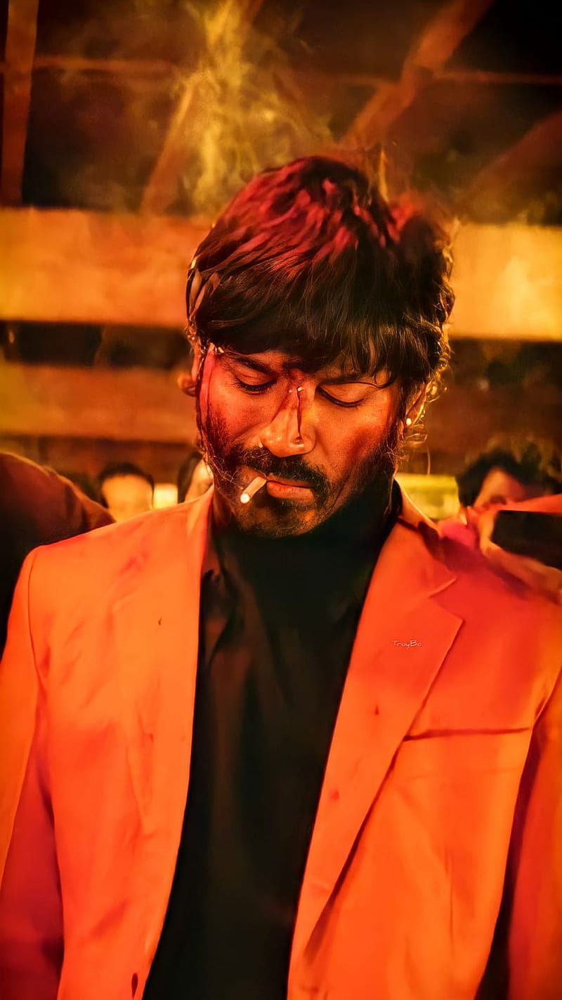
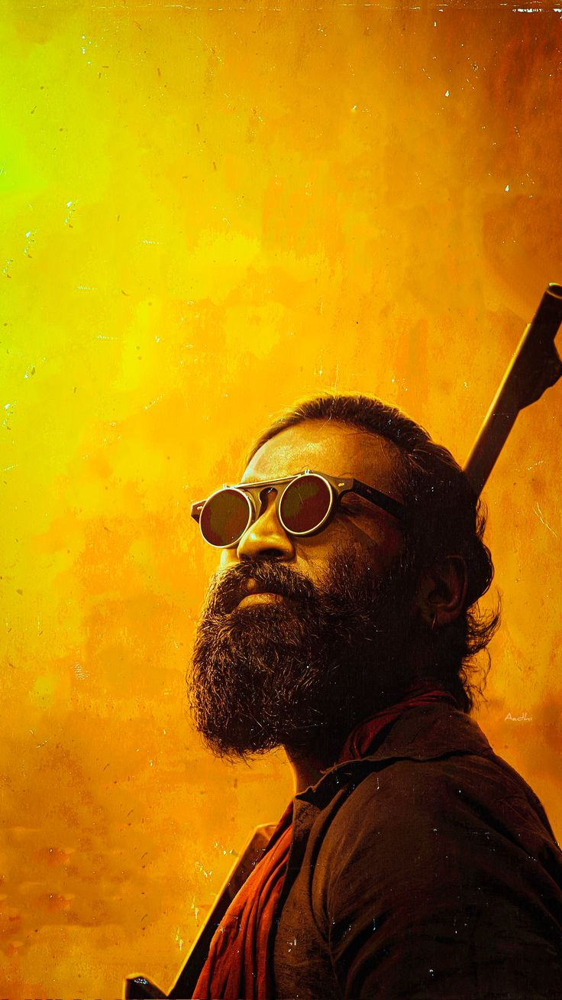
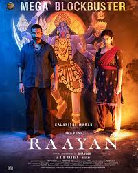
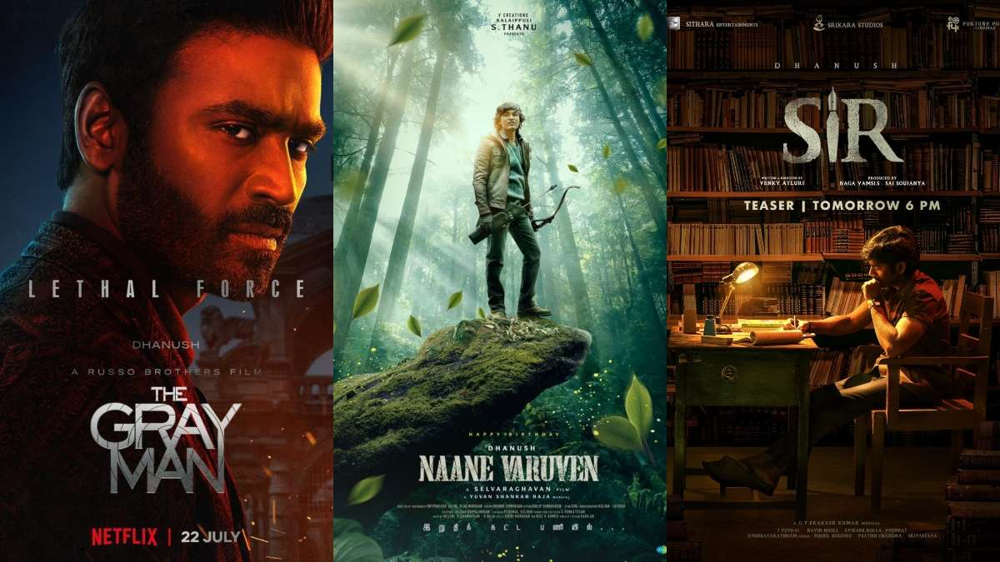

Actor | Singer | Director | Producer | Dancer | Composer
    Venkatesh Prabhu Kasthuri Raja (born 28 July 1983), known professionally as Dhanush, is an Indian actor, producer, director, lyricist and playback singer who primarily works in Tamil cinema. Having starred in 50 films over his career, his accolades include four National Film Awards (two as actor and two as producer), fourteen SIIMA Awards, eight Filmfare Awards South and a Filmfare Award. One of the highest paid actors in Indian cinema, he has been included in the Forbes India Celebrity 100 list six times. Dhanush's first film was Thulluvadho Ilamai, a 2002 coming-of-age film directed by his father, Kasthuri Raja. He achieved further success in Polladhavan (2007) and Yaaradi Nee Mohini (2008), both of which were critically acclaimed and commercially successful. His role as a rooster fight jockey in Aadukalam (2010) won him the National Film Award for Best Actor and the Filmfare Award for Best Actor – Tamil. He continued success with films including Maryan (2013), Velaiilla Pattadhari (2014), Anegan (2015), Kodi (2016), Vadachennai (2018), Asuran (2019), Thiruchitrambalam (2022) and Vaathi (2023). Vadachennai emerged as the highest-grossing A-rated Tamil film of all time, which was later surpassed by Raayan in 2024 which also stars Dhanush;while Thiruchitrambalam and Vaathi entered the 100 Crore Club within a month of their release. During the 2010s, he also starred in the action films Maari (2015), Maari 2 (2018), and Velaiilla Pattadhari 2 (2017). In 2011, Dhanush's popular bilingual song "Why This Kolaveri Di" from the romantic psychological thriller film 3 (2012) became the first Indian music video to cross 100 million views on YouTube. He made his Hindi film debut with Aanand L. Rai's Raanjhanaa (2013). His performance as an obsessive one-sided lover in the film won him the Filmfare Award for Best Male Debut in addition to a nomination for the Filmfare Award for Best Actor. Dhanush produces films through his production company, Wunderbar Films, and he made his directorial debut with Pa Paandi (2017). His song "Rowdy Baby" from Maari 2 became one of the most-viewed Indian songs of all time. It is the first South Indian video song to reach 1.5 billion views on YouTube. Dhanush won his second National Film Award for Best Actor for Asuran (2019).